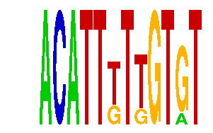

family_18 |
|---|
|  |
| Download PWM |
| Download instances (motifs) |
| Show motif distribution |
Query_ID | Query_Consensus | Subject_Name | Source_DB | Subject_ID | Length | Orientation | Offset | Divergence | Overlap | Subject_Consensus |
|---|---|---|---|---|---|---|---|---|---|---|
| family_18 | ACATTTTTGTGT | YKACATTT | JASPAR | PF0145 | 8 | as given | -2 | 0.735 | 6 | TTACATTT |
| family_18 | ACATTTTTGTGT | TGACATY | JASPAR | PF0042 | 7 | as given | -2 | 0.801 | 5 | TGACATC |
Sequence | Start_position (from start) | Start_position (from end) | Average conservation | Best conservation score | Instance_with_best_CS | Best_Z-score | Instance_with_best_ZS | Strand |
|---|---|---|---|---|---|---|---|---|
| chr18:11250731-11251900 | 1133 | 1145 | 0.630917 | 1 | ACATTKTKGTGT | 14.270282 | ACATTKTTGTRT | 1 |
| chr3:95931600-95932879 | 432 | 444 | 0.00116667 | 0.004 | ACATTKTTGTRT | 14.270282 | ACATTKTTGTRT | 1 |
| chr19:53768400-53769408 | 925 | 937 | 0.504333 | 0.56 | ACATTKTTGTRT | 20.719866 | ACATTKTKGTGT | 1 |
| chr10:63232600-63234293 | 1477 | 1489 | 0.131167 | 0.221 | ACATTKTKGTGT | 14.270282 | ACATTKTTGTRT | 1 |
| chr2:165874153-165875153 | 904 | 916 | 0.00208333 | 0.009 | ACATTKTTGTRT | 14.270282 | ACATTKTTGTRT | 1 |
| chr18:55410968-55412700 | 596 | 608 | 0.993917 | 1 | ACATTKTTGTRT | 20.719866 | ACATTKTKGTGT | 1 |
| chr5:65986057-65987057 | 493 | 505 | 0.994917 | 1 | ACATTKTKGTGT | 20.719866 | ACATTKTKGTGT | 1 |
| chr11:20938386-20939500 | 510 | 522 | 0.0420833 | 0.289 | ACATTKTKGTGT | 20.719866 | ACATTKTKGTGT | 1 |
| chrX:99208600-99210900 | 80 | 92 | 0.0605833 | 0.069 | ACATTKTTGTRT | 20.719866 | ACATTKTKGTGT | 1 |
| chr3:33892000-33893726 | 1633 | 1645 | 0.02475 | 0.031 | ACATTKTTGTRT | 20.719866 | ACATTKTKGTGT | 1 |
| chr2:180126900-180134700 | 54 | 66 | 0.768917 | 0.83 | ACATTKTKGTGT | 20.719866 | ACATTKTKGTGT | -1 |